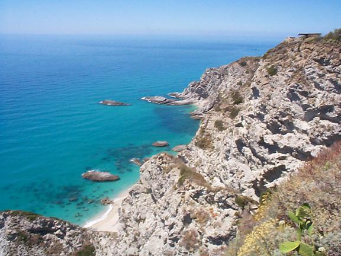
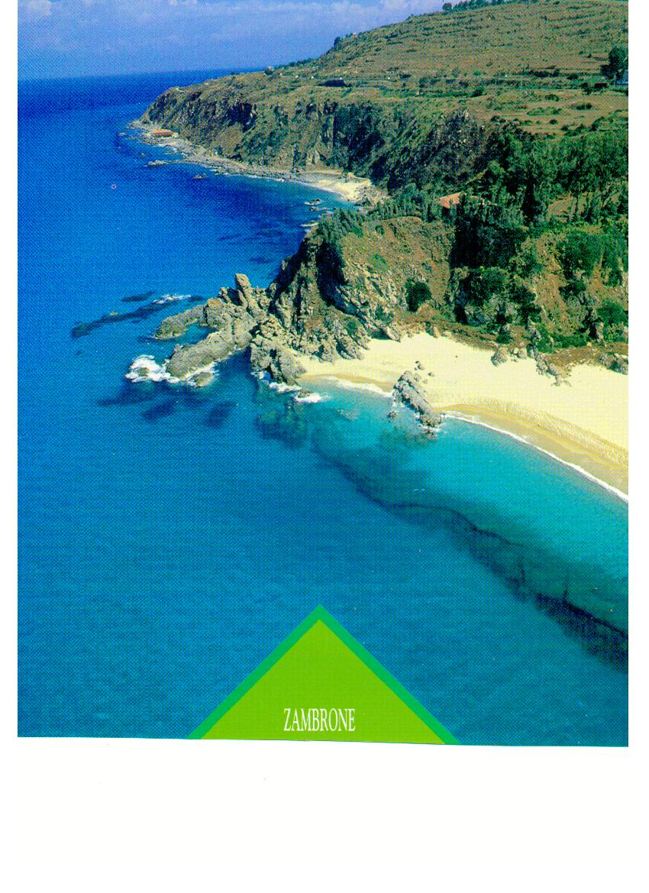

La Costa degli Dei è uno dei tratti di litorale più spettacolari d’Italia, un paradiso calabrese che si snoda per circa 50 chilometri lungo il Tirreno da Pizzo Calabro a Nicotera, abbracciando gioielli come Tropea, Santa Domenica di Ricadi e Riccione di Ricadi, dove sorge la esclusiva Villa del Conte Santa Domenica. Chiamata così per la bellezza divina delle sue spiagge di sabbia bianca finissima, scogliere basaltiche a picco sul mare smeraldo e promontori che regalano panorami mozzafiato, questa costa ha incantato viaggiatori, poeti e conquistatori sin dall’antichità, meritandosi l’appellativo di “Caraibi del Sud Italia”. Per chi cerca case vacanze sulla Costa degli Dei o vacanze a Tropea, soggiornare a Villa del Conte significa immergersi in un paesaggio dove natura e storia millenaria si fondono, offrendo spiagge libere, calette nascoste e tramonti infuocati ideali per coppie, famiglie e amanti del mare cristallino.
Il cuore pulsante della Costa degli Dei batte intorno a Tropea, la “perla del Tirreno” eletta più volte “Borgo dei Borghi” d’Italia, con il suo centro storico aggrappato a un promontorio dominante e la celebre Chiesa di Santa Maria dell’Isola che emerge solitaria da uno scoglio come un miraggio bizantino. Da qui, scendendo verso Santa Domenica di Ricadi, il litorale si apre in spiagge iconiche come Michelino e La Pizzuta, bandiere blu consecutive per la purezza delle acque, perfette per snorkeling, immersioni e passeggiate al tramonto tra ulivi secolari e agrumeti profumati. La costa continua con insenature rocciose come quella di Grotticelle, protetta da pinete lussureggianti, e arriva fino alle dune sabbiose di Nicotera Marina, collegando un mosaico di borghi autentici dove la cipolla rossa di Tropea DOP, gli scenari di Pizzo con i suoi gelati artigianali e i sentieri del Parco Naturale Regionale dei Giganti dominano l’esperienza sensoriale. Questa striscia di Calabria, battuta da brezze marine e illuminata da un sole generoso oltre 300 giorni l’anno, è un eden per escursioni in barca, trekking costieri e degustazioni di vino Cirò e olio extravergine nei frantoi locali.

Nata da processi geologici millenari la Costa degli Dei unisce un mare tra i più belli d’Europa a un entroterra fertile di vigneti, oliveti e macchia mediterranea, habitat di falchi pellegrini e tartarughe caretta caretta che depongono le uova sulle spiagge. Accessibile via A2 del Mediterraneo e l’aeroporto di Lamezia Terme (solo 1 ora di distanza), è la meta ideale per vacanze family friendly Costa degli Dei o soggiorni romantici, con Villa del Conte Santa Domenica come base perfetta per esplorare baie segrete, fare SUP o kayak e assaporare la cucina calabrese nei ristoranti sul mare. Lontana dal turismo di massa, preserva un’autenticità che la rende unica: festival estivi, sagre della ‘nduja e mercati contadini animano l’estate, mentre in primavera e autunno offre quiete e prezzi accessibili per un relax rigenerante.

Da Villa del Conte sulla Costa degli Dei, la vacanza diventa un’ode alla bellezza calabrese: prenotate ora il vostro soggiorno a Santa Domenica di Ricadi o Tropea per scoprire spiagge paradisiache, borghi incantati e un mare che sembra dipinto, confermando perché la Costa degli Dei sia il sogno di ogni viaggiatore in cerca di Italia autentica e indimenticabile.